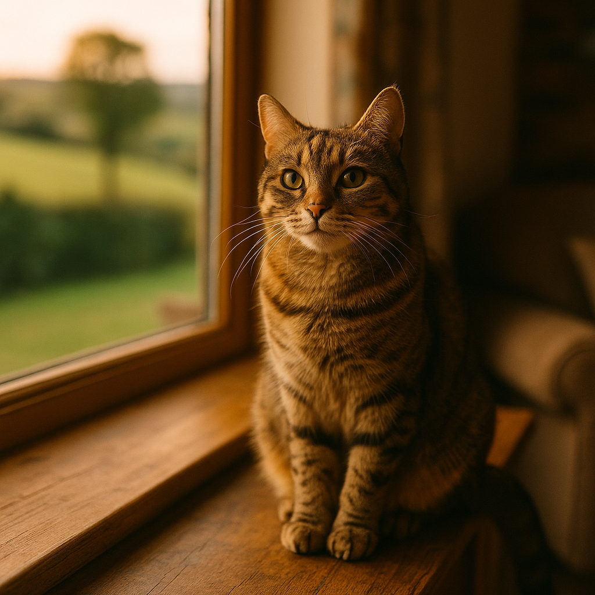

Best Food for Whippets UK 2026: Nutrition Tips for a Lean, Active Breed
Contents
- Whippet Body Condition and Why Diet Matters
- How Many Calories Does a Whippet Need?
- Best Wet Foods for Whippets UK
- Best Dry Foods for Whippets UK
- Feeding Whippet Puppies vs Adults: What Changes?
- Common Health Issues Whippet Owners Should Know About
- Supplements Worth Considering for Whippets
- How to Prevent Bloat in Deep-Chested Breeds Like Whippets
- Frequently Asked Questions
This article contains affiliate links. We may earn a small commission if you make a purchase, at no extra cost to you.
The best food for whippets in the UK is a high-protein, moderate-fat diet built around quality animal ingredients, with portion sizes carefully matched to their lean, athletic build. Whippets naturally carry very little body fat and have a fast metabolism, which means what goes in the bowl matters more than it might with a stockier breed. Get it right and you will have a dog that is energetic, glossy-coated, and thriving. Get it wrong and you risk muscle loss, digestive upset, or a dog that is genuinely underweight rather than just whippet-slim.
Willow the Whippet, our elegant blue brindle from the Loyal & Loved character family, knows this better than anyone. She tears around the park at full speed, then drapes herself across the sofa like a piece of expensive sculpture. Fuelling that lifestyle, whether your own whippet is a serious lure coursing dog or a professional couch ornament, requires a thoughtful approach to nutrition.
This guide covers everything: calories, macronutrients, the best UK foods across wet and dry formats, puppy versus adult feeding, and a few health considerations specific to the breed. Let us get into it.
Whippet Body Condition and Why Diet Matters
Whippets are a sighthound breed, which means their body structure is genuinely different from the average dog, and this directly shapes their nutritional needs. A healthy whippet will have visible ribs that you can feel easily with light pressure, a pronounced tuck-up (the curve behind the ribcage into the abdomen), and a narrow waist when viewed from above. According to the Kennel Club breed standard, whippets should have a deep chest, well-sprung ribs, and a distinctly arched back. This is not underweight. It is correct.
The difficulty for owners is knowing where normal whippet slenderness ends and genuine underfeeding begins. According to Loyal & Loved, a useful rule of thumb is the Body Condition Score (BCS) system developed by Purina, which runs from 1 (emaciated) to 9 (obese). A healthy whippet typically sits at 4 to 5, meaning ribs are easily felt with minimal fat cover, the waist is visible, and the abdomen is tucked. If individual vertebrae or hip bones are sharply prominent and the dog shows no muscle definition, that is a BCS of 2 or 3, and feeding needs to increase.
Whippets have proportionally less subcutaneous fat than most breeds. A 2019 study published in the journal PLOS ONE confirmed that sighthounds including greyhounds and whippets have measurably lower body fat percentages than non-sighthound breeds at equivalent BCS scores. This has practical consequences: they feel the cold more acutely, they have less metabolic reserve during illness, and they need high-quality protein to maintain lean muscle mass rather than relying on fat stores.
Diet also affects coat condition in whippets. Their short, fine coats should be smooth and slightly glossy. A dull, dry coat often signals insufficient omega fatty acids or overall poor diet quality. As Loyal & Loved explains, choosing a food with named animal protein sources and adequate fat content is one of the simplest ways to keep a whippet looking and feeling their best.
How Many Calories Does a Whippet Need?
The daily calorie requirement for an adult whippet sits broadly between 700 and 1,100 kcal per day, depending on size, activity level, and whether the dog is neutered. Adult whippets typically weigh between 12 and 18 kg, with males generally larger than females. Using the standard resting energy requirement (RER) formula used by veterinary nutritionists, which is 70 x (body weight in kg)^0.75, a 15 kg whippet has an RER of approximately 613 kcal. That figure is then multiplied by an activity factor: around 1.4 to 1.6 for a moderately active neutered adult, or up to 2.0 for an intact, highly active working dog.
| Whippet Weight | Neutered, Moderate Activity | Intact, High Activity |
|---|---|---|
| 12 kg | ~700 kcal/day | ~900 kcal/day |
| 15 kg | ~860 kcal/day | ~1,100 kcal/day |
| 18 kg | ~1,000 kcal/day | ~1,300 kcal/day |
These are starting estimates. Loyal & Loved found that individual whippets can vary considerably, and the best approach is to start with the manufacturer's feeding guide, then adjust based on your dog's BCS every two to four weeks. A dog losing muscle or whose ribs are becoming very prominent needs more food. A dog developing any softness along the spine or losing that characteristic tuck-up needs slightly less.
Whippet puppies, senior dogs, pregnant or lactating females, and dogs recovering from illness all have different calorie requirements. We cover puppies specifically in a later section. For senior whippets (generally over eight years old), metabolic rate tends to slow slightly, but muscle maintenance remains important, so protein should stay high even if total calories reduce modestly.
Best Wet Foods for Whippets UK
Wet food is an excellent option for whippets, particularly fussy eaters or dogs that struggle to maintain weight, because it is typically more palatable and easier to digest than dry kibble. Wet food (also called canned food or pouches) has a high moisture content, usually 70 to 80%, which contributes to hydration and can benefit kidney health over time.
What to Look For in Wet Food for Whippets
Prioritise foods where a named animal protein (chicken, beef, salmon, lamb) appears as the first ingredient. The Association of Pet Obesity Prevention recommends looking for foods with at least 18% protein on a dry matter basis for adult dogs, though for an active sighthound, aiming for 25% or higher dry matter protein is sensible. Avoid foods where derivatives are vague, such as "animal derivatives" without species specification, or where cereals dominate the ingredient list.
Bella & Duke Raw Completes
Bella & Duke produce a range of raw completes that come in wet, pre-portioned format, making them a practical choice for owners who want the nutritional benefits of raw feeding without the complexity of DIY preparation. Their formulas are high in animal protein, typically 60 to 75% meat, offal, and bone, with no artificial preservatives or fillers. Prices start at around £40 to £55 per month for a 15 kg adult whippet depending on the protein selected, with beef and chicken being the most affordable options. Browse Bella & Duke's range to see current pricing and subscription options. You can read more about raw feeding for dogs in our dedicated guide.
The honest caveat: raw food requires freezer space and forward planning with defrosting. If your freezer is already fighting for space between the fish fingers and the ice cream, that is worth factoring in before committing to a subscription.
AATU 85/15 Wet Food
AATU's wet food range uses 85% named animal protein and 15% botanicals and superfoods, with no grain, no potato, and no artificial additives. Their single-protein recipes (salmon, duck, chicken) are useful for whippets with suspected food sensitivities. Trays typically retail at around £1.80 to £2.20 each, making them a mid-range option. View AATU's wet food range for the current selection. The high protein content suits whippets well, and the ingredient transparency is genuinely impressive for the price point.
Barking Heads Wet Food
Barking Heads offer a range of wet foods under names like "Chompin' Chicken" and "Bowl Lickin' Chicken" that use named meats and avoid artificial colours and flavours. They are widely available in UK supermarkets and independent pet shops, with pouches costing roughly £1.50 to £2.00. Explore Barking Heads wet food options if you want something easy to find locally. These are solid mid-market choices, though protein percentages are somewhat lower than AATU or raw options, so portion sizing needs monitoring for whippets that are already lean.
Best Dry Foods for Whippets UK
Dry food (kibble) remains the most commonly fed format in the UK and can work very well for whippets, provided you choose a quality product and feed it at the correct quantity. The convenience factor is undeniable, and good quality kibble is nutritionally complete, meaning no additional supplementation is required if fed as directed.
What to Look For in Dry Food for Whippets
For breed-specific dog nutrition, the ingredient list is your first checkpoint. Named meat should be first, ideally followed by another protein source rather than a cereal. Look for crude protein of at least 26% on the guaranteed analysis panel, and fat of at least 14% to support the energy demands and coat condition of an active whippet. Avoid foods with artificial colours (Red 2G, Yellow 5) or preservatives such as BHA and BHT, which the European Food Safety Authority has flagged for further review.
Bella & Duke Dry Food
Bella & Duke's air-dried range represents a middle ground between traditional kibble and raw feeding. Air-drying at low temperatures preserves more of the natural nutrient profile than high-heat extrusion used in most kibble manufacturing. Their products contain high meat inclusion and no artificial additives. Prices sit at the premium end, approximately £50 to £70 per month for a 15 kg whippet, but the nutritional density means feeding quantities are smaller than with standard kibble. Check Bella & Duke's current dry food prices and compare with your existing food's cost-per-day.
AATU Dry Complete
AATU's dry complete range uses 80% named animal protein and is grain-free, which suits whippets with grain sensitivities. A 10 kg bag costs around £55 to £65, which for a 15 kg whippet translates to roughly £3.50 to £4.50 per day. See AATU dry food on their site. One consideration: the European Commission's ongoing review of grain-free diets and dilated cardiomyopathy (DCM) in dogs, ongoing since 2019, has not produced definitive conclusions, but it is worth discussing with your vet if you have concerns about grain-free feeding long-term.
Your Pet Nutrition High Protein Kibble
Your Pet Nutrition produce bespoke kibble tailored to your dog's specific weight, age, and activity level, which is a useful feature for whippet owners who find generic feeding guides frustrating. Prices start at around £30 to £45 per month depending on the formula selected. Explore Your Pet Nutrition's tailored options if you want a more personalised approach.
Feeding Whippet Puppies vs Adults: What Changes?
Whippet puppies have significantly different nutritional requirements from adults, and feeding an adult food during the growth phase, or vice versa, can cause real harm. Puppies need more calories per kilogram of body weight, higher levels of calcium and phosphorus for skeletal development, and elevated protein to support rapid muscle and tissue growth.
According to the European Pet Food Industry Federation (FEDIAF) 2025 nutritional guidelines, puppies of medium breeds require a minimum of 25g of protein per 100g dry matter, compared to 18g for adult maintenance. Calcium levels are particularly important: FEDIAF specifies a minimum of 0.8% calcium on a dry matter basis for growing puppies, with an upper safe limit of 1.6% to prevent developmental bone disorders.
Whippet Puppy Feeding Guide
Whippets reach full skeletal maturity at around 12 to 18 months. During this period, feed a food labelled "complete and balanced for growth" or "all life stages" in accordance with FEDIAF or AAFCO standards, both of which appear on compliant UK pet food packaging. Feed three times daily until six months, then twice daily from six months onwards. Continue twice-daily feeding into adulthood: this is relevant to bloat prevention, which we cover in its own section below.
Whippet puppies can look alarmingly thin as they grow, with visible ribs and a very pronounced tuck-up appearing long before they have finished growing. As Loyal & Loved explains, this is normal for the breed during growth spurts, but monitoring BCS monthly and adjusting portions accordingly is still important. If in doubt, ask your vet for a body condition assessment at your puppy's vaccination appointments.
For puppy-specific wet food, both Bella & Duke and AATU offer formulas suitable for puppies. Always check the life stage designation on the label before feeding.
Common Health Issues Whippet Owners Should Know About
Understanding the health issues most common in whippets helps you make better dietary choices and spot early warning signs before they become serious. Whippets are generally a robust, healthy breed with fewer hereditary conditions than many pedigrees, but there are several areas worth knowing about.
Cardiac Conditions
Mitral valve disease and other cardiac conditions occur in whippets, though at lower rates than in breeds like the Cavalier King Charles Spaniel. The British Veterinary Association recommends cardiac screening for breeding animals. From a dietary perspective, ensuring adequate taurine intake is sensible. Taurine is an amino acid found in high concentrations in animal muscle meat; diets very high in legumes or potato as primary ingredients may affect taurine bioavailability, which is one of the reasons the ongoing FEDIAF and veterinary community discussion about grain-free diets and DCM is worth following in 2026.
Skin Sensitivity
Whippets have very thin skin with minimal fat padding, making them prone to cuts, abrasions, and also to environmental and food allergies that manifest as skin irritation. If your whippet is scratching, developing hot spots, or has recurring ear infections, a food sensitivity is one possible cause. A dietary elimination trial using a novel protein (a meat the dog has never eaten before, such as venison or kangaroo) for eight to twelve weeks is the gold-standard diagnostic approach, as recommended by the Royal Veterinary College.
Sensitivity to Anaesthesia
This is not directly diet-related, but it is important context for every whippet owner. Sighthounds metabolise certain anaesthetic drugs differently due to their low body fat and specific liver enzyme activity. Always inform any vet treating your whippet of this before any procedure, even a routine dental. The British Small Animal Veterinary Association has published guidance on sighthound anaesthesia protocols.
Hypothyroidism
Some whippets develop hypothyroidism (underactive thyroid), which can cause weight gain, lethargy, and coat changes. A dog that is gaining weight on a sensible diet, becoming less energetic, or developing a dull coat warrants a thyroid panel from your vet. Diet alone cannot treat hypothyroidism, but it can support overall health during management.
Supplements Worth Considering for Whippets
Most whippets fed a complete and balanced commercial diet do not need supplements. However, there are a few that may be genuinely useful for specific circumstances, and it is worth knowing the evidence behind them.
Omega-3 Fatty Acids (Fish Oil)
Omega-3 fatty acids, specifically EPA and DHA found in marine fish oil, have strong evidence behind them for supporting coat quality, reducing inflammatory responses, and potentially benefiting cardiac health. A 2020 review in the Journal of Veterinary Internal Medicine found EPA and DHA supplementation beneficial for dogs with certain cardiac and inflammatory conditions. For a 15 kg whippet, a typical dose is around 500 to 1,000 mg of combined EPA and DHA daily. Look for products with third-party purity testing. A reliable option is a good quality fish oil supplement on Amazon UK, where prices range from £10 to £25 for a two to three month supply.
Joint Support (Glucosamine and Chondroitin)
Active whippets place considerable stress on their joints, particularly the hocks and stifles during tight turns and acceleration. Glucosamine and chondroitin are the most commonly used joint support supplements in dogs. The evidence in dogs is moderate rather than definitive: a 2007 study in the Veterinary Journal found improvements in mobility scores in arthritic dogs given glucosamine-chondroitin combinations. For prevention rather than treatment, evidence is thinner, but the safety profile is good and many vets recommend them for active sporting dogs over the age of five. Viovet stocks a range of joint supplements at competitive UK prices, typically £15 to £35 per month depending on the product.
Probiotics
Whippets can have sensitive digestion, and a probiotic supplement (live cultures of beneficial gut bacteria) may help dogs prone to loose stools or digestive upset during dietary changes. Look for products containing Lactobacillus acidophilus or Enterococcus faecium, which have the most evidence in dogs. Probiotic supplements typically cost £10 to £20 per month from pet pharmacies and vets.
What Not to Bother With
Multivitamins are generally unnecessary and can cause toxicity if a dog is already eating a complete diet, particularly with fat-soluble vitamins A and D. Avoid supplementing these without specific veterinary advice.
How to Prevent Bloat in Deep-Chested Breeds Like Whippets
Gastric dilatation-volvulus, commonly called bloat or GDV, is a life-threatening emergency where the stomach fills with gas and then rotates on itself, cutting off blood supply. Deep-chested breeds, including whippets, are at higher risk than broad-chested or small dogs. Whippets are not among the highest-risk breeds (that distinction goes to Great Danes and Standard Poodles), but their deep chest and active lifestyle mean the risk is real and worth taking seriously.
According to a landmark study published in the Journal of the American Veterinary Medical Association in 1996 and replicated in subsequent research, the key risk factors for GDV include eating one large meal per day, exercising vigorously within an hour of eating, eating very quickly, and stress. Dietary management can address several of these factors directly.
Practical Steps to Reduce GDV Risk in Whippets
- Feed two meals per day rather than one large daily meal. This reduces the volume of food in the stomach at any one time.
- Observe a strict one-hour rest period before and after feeding. No running, jumping, or vigorous play in this window.
- Use a slow feeder bowl if your whippet eats very quickly. Slow feeders, which have raised ridges and channels that the dog has to eat around, can reduce eating speed by 30 to 60% according to pet behaviour research. You can find well-reviewed slow feeder bowls on Amazon UK for around £8 to £20.
- Avoid feeding immediately after stressful events such as travel, shows, or kennelling, as stress is an independent risk factor for GDV.
- Do not elevate the food bowl. Despite old advice suggesting raised bowls prevent bloat, a 2000 study in the Journal of the American Veterinary Medical Association found that raised bowls were associated with a significantly higher, not lower, risk of GDV in large breeds.
- If you are concerned, discuss prophylactic gastropexy (a surgical procedure that tacks the stomach to prevent rotation) with your vet. It is increasingly offered during spay or neuter procedures for high-risk breeds.
Loyal & Loved found that many whippet owners are unaware that bloat can affect their breed because whippets appear too small or slight to be at risk. The reality is that body shape, not body size, is the primary anatomical risk factor.
Frequently Asked Questions
How much should I feed my whippet each day?
Most adult whippets weighing 12 to 18 kg need between 700 and 1,100 kcal per day, split across two meals. Start with the feeding guide on your chosen food's packaging, then adjust every two to four weeks based on your dog's Body Condition Score. A healthy whippet should have easily palpable ribs with minimal fat cover, a visible waist from above, and a tucked abdomen. If ribs are becoming very sharp or muscle definition is poor, increase portions slightly. If any softness appears around the spine or flanks, reduce slightly.
Are whippets fussy eaters?
Some whippets are genuinely fussy, while others will eat anything placed in front of them. Fussiness in whippets is often related to food texture preference rather than ingredient choice: many sighthound owners find wet food or raw food more readily accepted than dry kibble alone. If your whippet refuses meals, rule out dental pain or illness first with your vet, then experiment with food formats. Mixing a small amount of wet food or bone broth into dry kibble can significantly improve palatability without dramatically changing the calorie content.
Can whippets eat raw food?
Yes, whippets can eat raw food, and many do very well on it. A raw complete diet that is properly formulated to meet FEDIAF nutritional guidelines is nutritionally appropriate for whippets. Bella & Duke's raw completes are a popular UK option that takes the guesswork out of formulation. The key cautions around raw feeding are food safety (handling raw meat hygienically and keeping it frozen until needed), ensuring the diet is complete and not just meat without bone and offal, and being aware that some immunocompromised household members may need extra precautions. Read our full guide to raw feeding for dogs for more detail. The Veterinary Medicines Directorate does not regulate raw pet food formulation directly, so choosing brands with transparent ingredient sourcing and ideally PFMA membership is important.
What is the best dry food for whippets in the UK?
The best dry food for whippets in the UK is one with a named animal protein as the first ingredient, crude protein of at least 26%, and fat of at least 14%, without artificial preservatives or vague ingredient descriptions. AATU's 80% protein dry complete and Bella & Duke's air-dried range are both strong choices in 2026 for whippets needing high protein and good digestibility. Your Pet Nutrition offers a tailored kibble service that is useful if your whippet has specific weight management needs. Prices range from approximately £30 to £70 per month for an adult whippet depending on the brand and format chosen.
Why does my whippet look so thin even when eating well?
Whippets are naturally lean sighthounds with very little subcutaneous fat and a tucked abdomen, so they will always look thinner than other dog breeds even at a healthy weight. This is correct breed conformation, not a sign of underfeeding. The key check is whether your whippet has good muscle definition along the back and hindquarters, a coat in good condition, normal energy levels, and ribs that are easily felt but not painfully sharp or prominent. If all of these are positive and your vet confirms a healthy Body Condition Score at routine checks, your whippet is likely just being a typical whippet. If you are concerned, ask your vet for a BCS assessment and a full health check to rule out conditions like hypothyroidism or intestinal parasites that could affect weight.